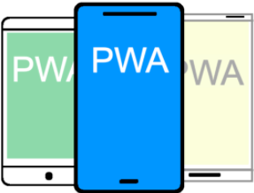

PWA
För att utveckla en app som fungerar på både på Android och IOS är tröskeln väldigt hög. Det kräver att man behärskar helt olika programmeringsspråk, layouthantering och verktyg. Tekniker för detta som fungerar på i stort sett alla idag kända enheter är html, css och javascript. Varför inte använda dessa tekniker för att utveckla plattformsoberoende mobila applikationer? I dag är detta möjligt. Tekniken heter PWA.
Uppdaterad 1.3